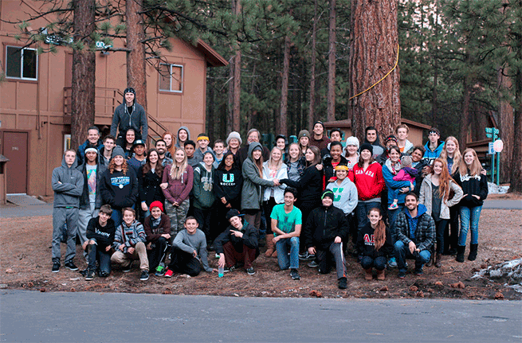

Small Groups
Adult Ministries
Our small groups are based on a community of believers that center around Fellowship, Scripture, Prayer, and Mission. A small group is the primary way to connect with others at Shalom of Bay City and grow as a follower of Jesus. We strongly encourage all our members to join one of our small groups Find a Group
Student Ministries
We offer a Student Ministry called Vintage on Sunday for students in 7th-12th grade. This involves Expository Bible Teaching community, opportunities to serve others, and great leaders to help your student in following Christ. For more information, Send Email to Amy Peterson
Children Ministries
Our Children's Ministry (a.k.a. Anchor) is focused on providing a safe environment as they teach the Bible, foster community, introduce kids to adults who love Jesus. We also help facilitate seasonal events to help our kids grow in community and in their walk with God such as Summer Camp. For more information, Send Email to Susie Watson